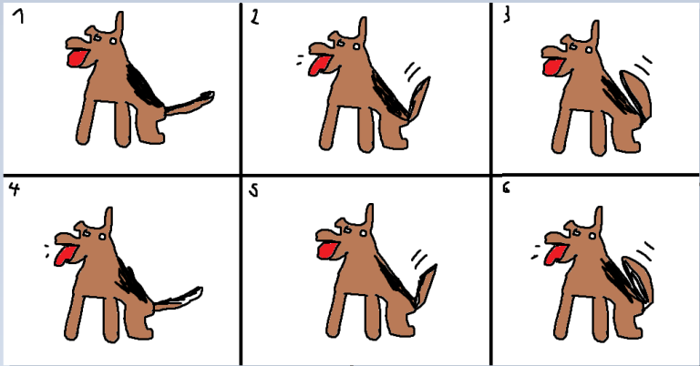
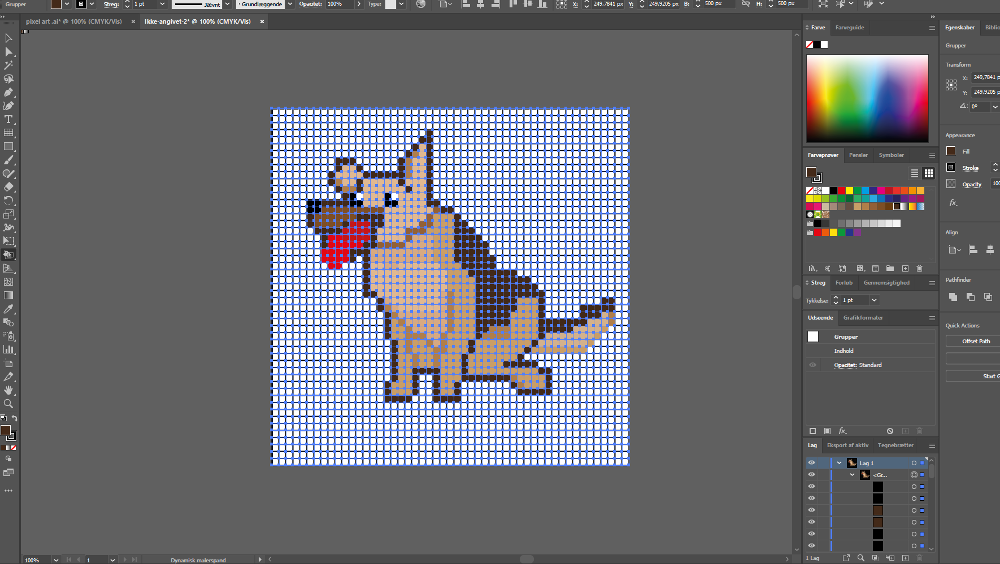
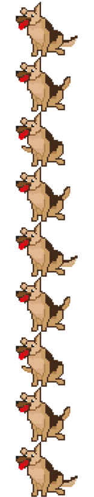

Animation
Jeg har i disse projekter arbejdet med at animere med Adobe Animate og CSS. Jeg har udarbejdet en pixeleret version af min hund i photoshop (som også kunne gøres i illustrator), og derefter lavet et spritesheet og kodet det ind på en side vha. CSS Sprite. Der skulle først og fremmest udarbejdes et storyboard, da animationen var ret enkel var det også en ret simpel storyboard:
Jeg tog det derefter til photoshop hvor jeg fik sat et gitter op og udfyldte gitteret en efter en således at jeg stod med en figur jeg kunne arbejde ud fra. Derefter gjaldte det at lave varierende versioner således at man kan få billedet til at "bevæge" sig:
Der skulle bageefter sættes et spritesheet op således at man kan implementere det på en side, og anvende CSS til at bringe animiationen til live:

Ved brug af css animation og keyframes får jeg følgende resultat:
Endvidere har jeg udarbejdet 2 yderligere animationer, heraf en moving art og en meget standard bil animation. Begge kan ses på følgende links:
Moving Art
Biler